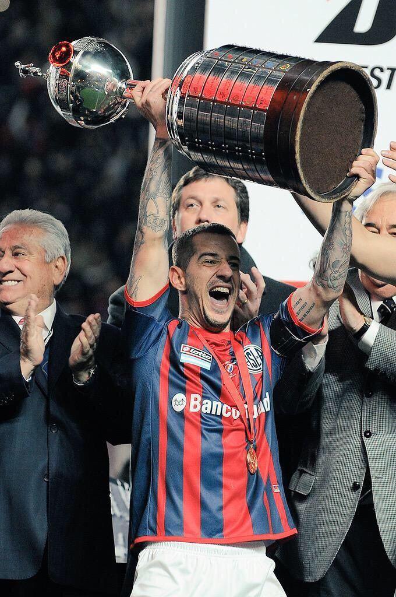
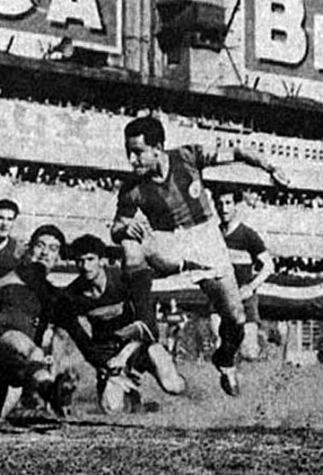
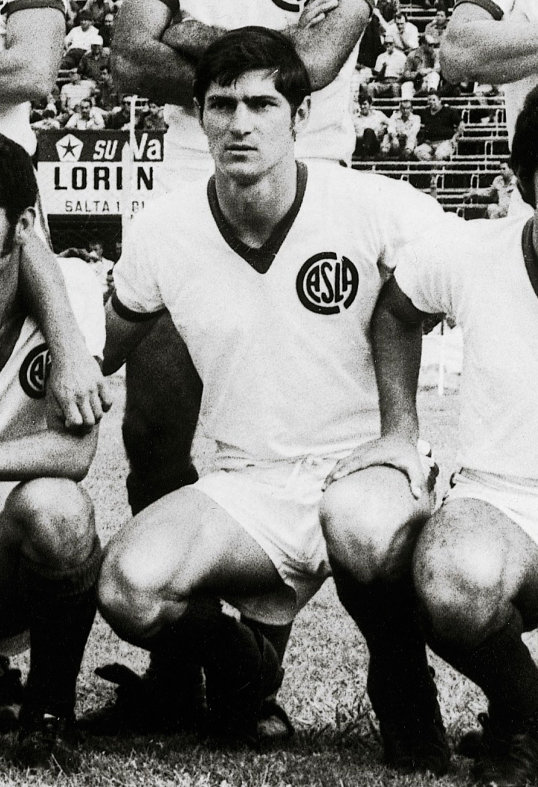
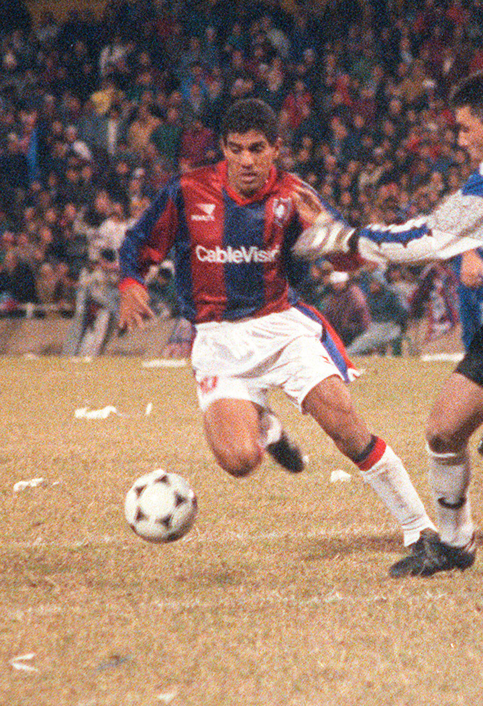

LEANDRO ROMAGNOLI
Es el jugador más ganador en la historia del profesionalismo, conquistó la Copa Libertadores con el club

ANGEL ZUBIETA
Fue capitán del equipo campeón en 1946 y un emblema del club por su nobleza para jugar, jamás una patada, nunca nada fuera de lugar, siempre firme y seguro.

JOSE FRANCISCO SANFILIPO
Tiene los títulos del mayor anotador histórico del club con 205 gritos, el título del 59 y el bicampeonato del 72. Los clásicos eran su especialidad: Huracán lo sufrió 16 veces; Boca, 14, y River, 12.

RODOLFO FISCHER

ALBERTO FEDERICO ACOSTA
Hizo goles de todos los colores pero en ningún lugar más que en San Lorenzo, donde volvió en tres ocasiones, la última para levantar las dos primeras estrellas internacionales del club y convertir el gol 300 de su carrera en su despedida de Boedo.

PAULO SILAS
Guía futbolístico en el campeonato del 95, el 10 brasileño quedó marcado a fuego en la piel de los hinchas.